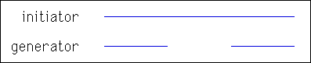
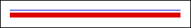
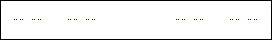

| Again, take as initiator the line segment of
length 1, but now the generator is the shape shown below. |
|  |
|  |
Click to repeat.
These iterations give a
sequence of shapes converging to a fractal, the Cantor set.
Because the set is quite sparse, the animation shows steps of the Cantor set iteration
in blue, and a more substantial shadow in red. |
|
| Here is a picture of the Cantor set resolved to the level of single pixels. |
| Although so much
has been removed that the Cantor set is hardly present at all, we shall find this fractal in
many mathematical, and some physical and even literary, applications. |
|  |